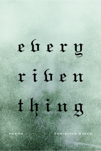

LANDSCAPE FOR GRIEF
Christian Wiman’s exploration of grief and faith in Every Riven Thing, his third poetry collection, will not satisfy readers expecting either easy access or a sense of closure. The literary and thematic connections with Wiman’s first two collections, The Long Home (Story Line Press, 1998, and Copper Canyon Press, 2007) and Hard Night (Copper Canyon Press, 2005), are apparent enough, but Wiman’s demand in his latest volume for the reader’s sustained attention is a departure from the more modest requirements of the poet’s earlier work. The effort required by these poems is not always rewarded, but careful and patient readers will find much of the work ultimately satisfying.
No one will ever confuse Wiman with Billy Collins. There are no dogs conducting orchestras here, no swirls into epiphany. The poet’s focus is so concentrated and serious that the slightest deviations announce themselves. At times, one senses a convert’s tendency to take everything – himself included – too seriously. Even the book’s design suggests solemnity: the faint cover image of a face emerging beneath the gothic font of the title; the white, gothic numerals on the otherwise solid black pages marking the volume’s three sections. The effect is slightly disturbing; the impression is one of something foreboding, dangerous, even medieval.
Wiman’s prose offers one framework for considering Every Riven Thing. As dangerous as it is to read biography into poems, in this instance the connection is unmistakable and the urge irresistible. In his 2006 essay “Love Bade Me Welcome,” Wiman discloses that he has been diagnosed with an incurable cancer of the blood. He also recalls a story told by Simone Weil, his spiritual mentor, in which two prisoners in adjoining cells learn over time to communicate by tapping and scratching on the dividing wall. The wall both separates, and provides the only connection between, the prisoners. In Every Riven Thing, the poet explores disease, grief and faith in three sections that move from the speaker’s anguished acceptance of his circumstance of disease, through an interlude of despair, to a focused theological framing of his condition.
Wiman’s facility with form is on display in the collection’s first section. From the five rhymed couplets of “To Grasp at the Mercury Minnows Are” to the sixty-two lines in “Sitting Down to Breakfast Alone,” the section thrives on formal variety. Even for a poet as formally dexterous as Wiman, though, the reach demanded by rhyme sometimes exceeds the poet’s grasp. In “Sitting Down to Breakfast Alone,” the speaker describes a waitress and a scene in a small-town diner
where even the oldest in the old men’s booth
swore as if it were scripture truth
they’d never had a breakfast better,
rapping a glass sharply to get her
attention when it went sorrowing
so far into some simple thing . . . .
More troubling, however – and indicative of these poems – is the poet’s unwillingness to provide emotional access points to the reader. The poems are neither obscure nor overly difficult. Notwithstanding the logical coherence, however, readers will leave many of the poems with little sense of connection to the speaker. Here is “To Grasp at the Mercury Minnows Are” in its entirety:
To grasp at the mercury minnows are
or were
in childhood’s kingdom
lord of boredom
is to see
through an intimate, ultimate clarity
that galaxy shatter
and like a mind of matter
resolve itself star by slow star.
To grasp at the mercury minnows are . . .
Concepts – “ultimate clarity,” “lord of boredom,” “childhood’s kingdom,” “mind of matter” – overpower the poem.
“Five Houses Down” is the most aesthetically satisfying poem in the first section, precisely because it grounds the reader in a place with identifiable characters and believable details without sacrificing the music of the lines and displays a rare touch of humor:
I loved his ten demented chickens
and the hell-eyed dog, the mailbox
shaped like a huge green gun.
I loved the eyesore opulence
of his five partial cars, the wonder-cluttered porch
with its oilspill plumage, tools
cauled in oil, the dark
clockwork of disassembled engines
christened Sweet Baby and benedicted Old Bitch . . . .
Yet, “Five Houses Down” does not belong, thematically or tonally, in the book.
Wiman establishes the tone of the volume’s first section in “After the Diagnosis,” “The Mole” and “Darkcharms.” Their titles, alone, evoke sickness and dis-ease. In the title poem, Wiman emphasizes the broken nature of human existence. He repeats the first line, “God goes, belonging to every riven thing he’s made,” at the beginning of each stanza and again in a closing line. Using form to advance content, the poet moves the caesura in each of the repeated lines, thereby disrupting their rhythm in different ways, until the final repetition in a complete declarative sentence that suggests both God’s disruptive role and God’s absence.
The most representative poem in the first section, however, is “This Mind of Dying,” a formal jewel capturing the tone of the book’s first two sections and anticipating the third by taking the form of a prayer of supplication directed to the speaker’s God, whom the speaker identifies with grief. Unfortunately, the poem also reflects the collection’s tendency to conceptualize, rather than concretize:
My God my grief forgive my grief tamed in language
to a fear that I can bear.
Make of my anguish
more than I can make. Lord, hear my prayer.
The poem is a prayer of lament; it could have been written by the psalmist.
The second section of the volume is the least satisfying. The first three poems – “Voice of One Head,” “Country in Search of a Symbol” and “The Wind Is One Force” – are unmistakably political and introduce a note of cultural criticism that makes only one more brief appearance near the end of section two in the seven named sections of “Not Altogether Gone,” a poem whose tone may be discerned from two of the section titles: “Fuck Dominoes” and “Like a Dog Existence Is.” The only rationale for including “Do You Remember the Rude Nudists” in the collection at all may be its introduction of the speaker’s lover, but the book does not need it.
More on point are the section’s final two poems, “A Good Landscape for Grief” and “Jouissance.” The latter poem reinforces explicitly what the speaker has hinted in the preceding poems—the speaker struggles with inhabiting any sense of joy. “A Good Landscape for Grief,” the penultimate poem in the second section, provides the clearest transition into the final section of the book. It also contains some of the flaws that detract from the collection’s power. In this poem, Wiman describes a “good landscape for grief” as an arid one. In a striking, perhaps original, contrast, he compares the dry environment of grief with the saturated nature of depression:
Depression is a wet word, with ripe vines,
claustrophobic moss, endless dripping
instants which here have no more
purchase on the earth
than a tear from an armadillo’s eye.
The final image—that tear—is a strange one, but it chimes with the “here” in the third quoted line to locate the speaker unmistakably in the landscape of grief. The poem’s close examination of the parched landscape of grief and the dripping enclosure of depression is masterful; however, Wiman diminishes the power of the contrast by confusing the speaker’s voice. In line thirteen, Wiman employs the impersonal third-person singular when he writes of “one’s own maudlin drama.” In line five and elsewhere, the speaker uses the second-person direct address or, alternatively, the reflexive “you.” In the long comparison comprising lines sixteen through thirty-eight, Wiman dares the reader to figure it out:
We are gathered here to mark one man
passing. He is your father
and your son, my mother and my self.
Let us sing this city of instants
come back to be a part of us.
Notwithstanding the confusion in voice, however, the poem places the speaker firmly in the terrain of grief, and that is the essential setting for the third, and most rewarding, section of the book.
The last fourteen poems in the volume are theological. Prayer is the dominant mode; but, these poems are not prayers of devotion to a divinity with whom the speaker is in close relationship. These are prayers of the psalmist insisting to be heard, who desires understanding of suffering’s genesis, and who acknowledges the ambiguity and ultimate mystery of the divine’s simultaneous presence and absence.
Although the prayerful tone of these final poems is filtered through a screen of lament, in both form and image these poems respond to the earlier poems of grief—poems of a certain kind of wilderness. Considered as a group, the poems in this section are tighter metrically, and their stanzaic structures far more regular, than the poems in the first two sections. They look and sound more solid.
The language of faith occurs early and often in the third section. Wiman’s repetition of images to unify the collection, a device used to lesser effect in “Jouissance” and “It Takes Particular Clicks,” is particularly notable in the religious imagery found in “And I Said to My Soul, Be Loud.” Following the wonderful description of his life as a “war in a jar,” the speaker exclaims
For I am come a whirlwind of wasted things
and I will ride this tantrum back to God
until my fixed self, my fluorescent self
my grief-nibbling, unbewildered, wall-to-wall self
withers in me like a salted slug
The connection between wind and the divine is biblical. In II Kings, the prophet Elijah is taken into heaven in a whirlwind, and the breath of God – the ruah Yahweh – is a powerful Old Testament symbol of God’s presence and power. Wiman employs this symbol in no fewer than four poems but varies its application, from a vehicle to God to a tool of divine agency, even a malignant one.
Religious belief emerges unmistakably in this final section. Prayer is the dominant theme (“Hammer Is the Prayer,” “Small Prayer in a Hard Wind,” “Lord Is Not a Word” and “Lord of Having”). In “When the Time’s Toxins,”
somehow a seed
of belief
sprouts the instant
I acknowledge it . . . .
This belief, however, is not an immature embrace of easy answers. In “I Sing Insomnia,” the speaker struggles with purpose, grappling with his existential situation and finding his footing, though not a resting place, in religious faith and love. The collection closes with “Gone for the Day, She Is the Day,” questioning the role of the divine and suggesting human love as an appropriate posture from which to face suffering and mortality:
Sometimes one has the sense
that to say the name
God is a great betrayal,
but whether one is betraying
God, language, or one’s self
is harder to say.
It is easier to admire Every Riven Thing than it is to like it. In too many of these poems, Wiman indulges his own philosophical curiosity at the expense of his readers’ ability to participate emotionally; yet, the resulting emotional distance does not feel malicious. Rather, one leaves these poems with a vague sense of relief that someone else has voiced the anxiety and doubt that one has been too timid, or too afraid, to express.
Philip Belcher is a graduate of Southeastern Baptist Theological Seminary and the Duke University School of Law. He is the author of a chapbook and holds an MFA in Poetry.
Thanks for this detailed and insightful analysis of the book, which voices some reservations about it which I haven’t been able to put into words. It’s a difficult book, grief-laden and unconsoling – God’s absence is indeed everywhere felt. I really liked “To grasp at minnows” though – “a mind resolve / star by slow star” is lovely.
This review gives me a gateway of sorts into this collection’s poetry, and from the excerpts quoted, I can understand Mr. Belcher’s reservations. I’d say this is the sort of review I want, the sort that offers a detailed, intelligent assessment. There are so many books of poetry out there, and I appreciate a reviewer taking the time to delve into a book’s strengths and shortcomings. I need to see portions of poems to form my own judgements; this review gives them in just the right number. Thanks.
Pingback: “The Carmel Sugar Episode” | Which Silk Shirt